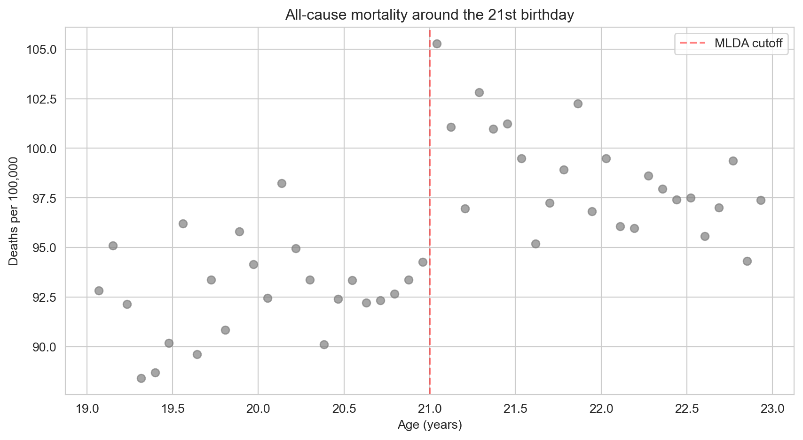
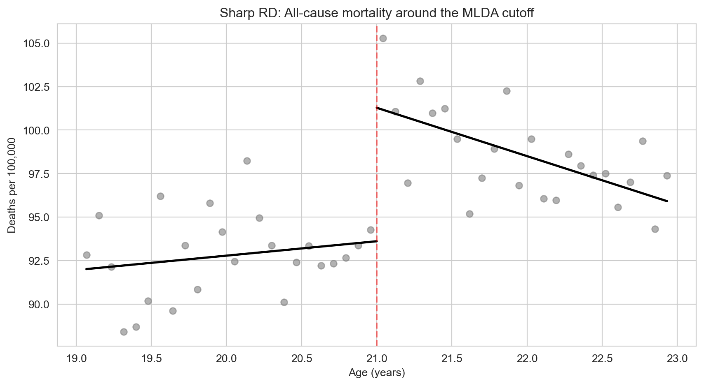
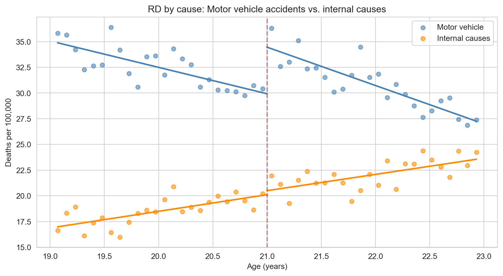

Act I
In the United States, the minimum legal drinking age (MLDA) is 21.
Should it be lower? If legal access raises deaths, a birthday rule is a life-and-death policy lever.
Near the line, the rule — not the person — decides who is treated.

All-cause deaths per 100,000, one dot per monthly age cell; the dashed line marks age 21.
The continuous score that decides treatment — here, age \(a\).
The value where treatment switches — here, 21.
\(D_a = 1\) at or above the cutoff, \(0\) below it.
Name these three and you have described the design.
| Term | Plain meaning |
|---|---|
| Sharp vs. fuzzy RD | Treatment flips fully at the cutoff vs. only its probability jumps |
| Continuity assumption | Without treatment, outcomes would pass smoothly through the cutoff |
| Bandwidth | How far from the cutoff we let the data reach |
| Placebo test | Check an outcome that should not jump — it must stay flat |
Sharp/fuzzy says how treatment moves; the other three keep the jump honest.
Act II
| Age | Legal access to alcohol |
|---|---|
| 20 years, 11 months | 0% |
| 21 years, 0 months | 100% |
There is no age at which we can compare treated and untreated people side by side.
RD has no overlap — so it cannot work by matching people with the same age.
Because RD extrapolates, the shape of the fitted trend matters.
\[D_a = \begin{cases} 1 & \text{if } a \geq 21 \\ 0 & \text{if } a < 21 \end{cases}\]
\(a\) is age (the running variable, agecell); \(D_a\) is the treatment switch (over21).
Treatment is a deterministic function of age: no exceptions, no choice — a sharp RD.
Age has a smooth path to mortality; the legal-access path is the only one that can create a break.
A speed bump on a smooth road means someone put it there.
import pandas as pd # pandas → load tables
import matplotlib.pyplot as plt # matplotlib → draw the scatter
# every course dataset lives in the repo's data/ folder on GitHub
GITHUB_DATA_URL = "https://raw.githubusercontent.com/cmg777/intro2causal/main/data/"
mlda = pd.read_csv(GITHUB_DATA_URL + "ch4/mlda_clean.csv") # monthly age cells
fig, ax = plt.subplots(figsize=(8, 4.5)) # one blank panel
ax.scatter(mlda["agecell"], mlda["all"], color="gray") # death rate vs. age
ax.axvline(21, color="red", linestyle="--") # mark the cutoff
plt.show() # the step at 21 appears\[M_a = \alpha + \rho \, D_a + \gamma \, a + e_a\]
all); \(D_a\) = over21age)The dummy captures the break; the age term absorbs the smooth slope.

All-cause death rate with a separate straight line fitted on each side of age 21.
| Column | Meaning |
|---|---|
agecell |
Age in years, one cell per month (19 to 23) |
age |
Age centred at 21 (0 = the cutoff) |
over21 |
Treatment dummy: 1 if 21 or older |
all, mva, suicide, internal, alcohol |
Deaths per 100,000, by cause |
age2, over_age, over_age2 |
Terms for the quadratic model |
Each row is an age, not a person: 24 cells below 21 and 24 above.
pf.feols call estimates the sharp RD!pip install -q pyfixest # pyfixest is not preinstalled in Colab
import pandas as pd # pandas → load tables
import pyfixest as pf # pyfixest → regressions with robust SEs
GITHUB_DATA_URL = "https://raw.githubusercontent.com/cmg777/intro2causal/main/data/"
mlda = pd.read_csv(GITHUB_DATA_URL + "ch4/mlda_clean.csv") # MLDA age cells
# death rate on the over-21 switch plus a linear age trend, robust SEs
m = pf.feols("all ~ over21 + age", data=mlda, vcov="hetero")
m.summary() # over21 = 7.66 (SE 1.51); Intercept 91.84+7.7
extra deaths per 100,000 at the 21st birthday — about 8% above the 91.8 just below
| Cause of death | Jump at 21 (SE) |
|---|---|
| All causes | 7.66 (1.51) |
| Motor-vehicle accidents | 4.53 (0.72) |
| Suicide | 1.79 (0.50) |
| Alcohol-related (direct) | 0.44 (0.21) |
| Internal causes (disease) | 0.39 (0.54) |
More than half the extra deaths happen on the road — drunk driving is the main channel.

Motor-vehicle deaths (blue) and internal-cause deaths (orange), each with separate lines on either side of 21.
A placebo outcome that stays flat makes the motor-vehicle jump believable.
!pip install -q pyfixest # pyfixest is not preinstalled in Colab
import pandas as pd # pandas → load tables
import pyfixest as pf # pyfixest → regressions with robust SEs
GITHUB_DATA_URL = "https://raw.githubusercontent.com/cmg777/intro2causal/main/data/"
mlda = pd.read_csv(GITHUB_DATA_URL + "ch4/mlda_clean.csv") # MLDA age cells
for y in ["mva", "internal"]: # a real channel, then a placebo
m = pf.feols(f"{y} ~ over21 + age", data=mlda, vcov="hetero") # same RD
print(y, round(m.coef()["over21"], 2), round(m.se()["over21"], 2))
# mva 4.53 0.72 · internal 0.39 0.54\[M_a = \alpha + \rho D_a + \gamma_1 a + \gamma_2 a^2 + \delta_1 a D_a + \delta_2 a^2 D_a + e_a\]
Code names: \(a^2\) = age2, \(a D_a\) = over_age, \(a^2 D_a\) = over_age2.
If the jump survives a curved trend, it is not an artefact of forcing a straight line.
| Window around 21 | Age cells | Jump (SE) |
|---|---|---|
| Full sample (19 to 23) | 48 | 7.66 (1.51) |
| ± 1.5 years | 36 | 8.70 (1.63) |
| ± 1.0 year | 24 | 9.75 (2.06) |
| ± 0.5 years | 12 | 8.88 (3.03) |
Closer cells are more alike, but fewer cells mean noisier estimates — the jump stays between 7.7 and 9.8.
!pip install -q pyfixest # pyfixest is not preinstalled in Colab
import pandas as pd # pandas → load tables
import pyfixest as pf # pyfixest → regressions with robust SEs
GITHUB_DATA_URL = "https://raw.githubusercontent.com/cmg777/intro2causal/main/data/"
mlda = pd.read_csv(GITHUB_DATA_URL + "ch4/mlda_clean.csv") # MLDA age cells
narrow = mlda[(mlda["agecell"] >= 20) & (mlda["agecell"] <= 22)] # ages 20–22 only
# interacted quadratic trend on the narrow window, robust SEs
m = pf.feols("all ~ over21 + age + age2 + over_age + over_age2",
data=narrow, vcov="hetero")
m.summary() # over21 = 9.61 (SE 2.29)| Cause of death | Linear, wide | Quad., wide | Linear, narrow | Quad., narrow |
|---|---|---|---|---|
| All causes | 7.66 (1.51) | 9.55 (1.83) | 9.75 (2.06) | 9.61 (2.29) |
| Motor-vehicle | 4.53 (0.72) | 4.66 (1.09) | 4.76 (1.08) | 5.89 (1.33) |
| Suicide | 1.79 (0.50) | 1.81 (0.78) | 1.72 (0.73) | 1.30 (1.14) |
| Internal causes | 0.39 (0.54) | 1.07 (0.80) | 1.69 (0.74) | 1.25 (1.01) |
| Alcohol-related | 0.44 (0.21) | 0.80 (0.32) | 0.74 (0.33) | 1.03 (0.41) |
Wide window = all ages 19 to 23; narrow window = ages 20 to 22. Quad. = interacted quadratic. Robust SEs in parentheses.
Polynomial order and bandwidth move the estimate a little — never the conclusion.
Crossing the line makes treatment more likely, not certain — a dimmer, not a switch.
\[\text{Effect} \;=\; \frac{\text{Jump in the outcome at the cutoff}}{\text{Jump in the probability of treatment at the cutoff}}\]
Reduced form ÷ first stage — the Wald ratio from Chapter 3, with the cutoff dummy as instrument.
If you understand IV, you already understand fuzzy RD.
| Sharp RD | Fuzzy RD | |
|---|---|---|
| At the cutoff | Treatment switches fully | Probability of treatment jumps |
| Estimation | OLS with the running-variable trend | 2SLS, cutoff dummy as instrument |
| Interpretation | Effect of treatment at the cutoff | LATE for compliers at the cutoff |
Fuzziness adds one step — scaling by the first stage — and narrows who the effect describes.
Comparing applicants just above and just below the cutoff isolates the effect of the school itself.
| What changes at the admissions cutoff | Jump |
|---|---|
| Peer quality (classmates’ ability) | +0.8 SD |
| Admitted students’ own achievement | No jump |
Better peers did not translate into better results for students at the margin.
Selection bias again: strong correlations between school quality and outcomes need not be causal.
RD buys strong internal validity at one margin, at the cost of reach.
One of the first RD studies — of what is now a ubiquitous research design.
Act III
Objection. RD is ordinary regression with age as a control.
Response. No age has both treated and untreated people, so there is nothing to compare at equal age. RD extrapolates each side’s trend to the cutoff — which is why the functional form and bandwidth must be varied and reported.
Objection. Death rates break at 21, and 21 is the drinking age — case closed.
Response. Only if nothing else switches at 21. The design earns belief when other influences stay smooth and placebo outcomes stay flat — as internal-cause deaths do.